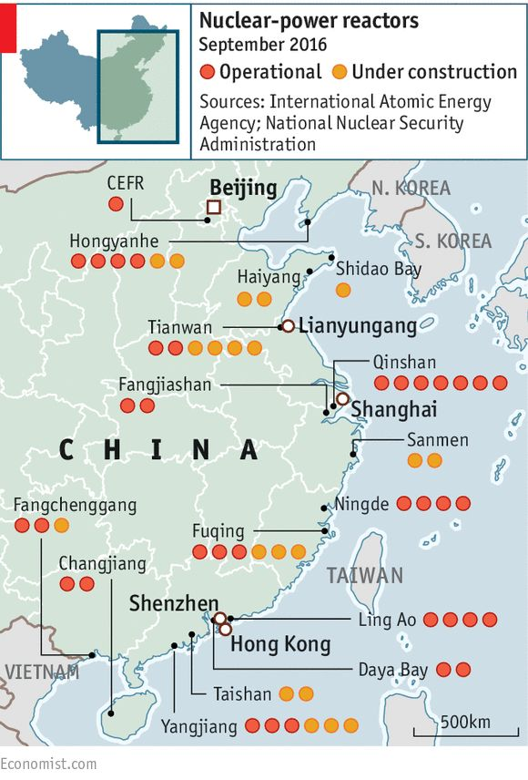

核能與理性討論
情緒與選票之外，仍需面對碳排與基載：恐懼要被理解，但不能替代計算。

核能在台灣高度政治化。恐懼來自地狹人稠的風險想像，也來自長期政治行銷。不論對錯，行銷很成功——恐懼已成為集體直覺。
把核電封存，每人可能多付出約一千美元量級的代價（書中粗估）。這筆帳很少被放進「反核＝道德正確」的句子旁邊。
中國沿海鄰近台灣有大量核電機組。書中有個刺耳比喻：全班都在作弊時，你裝清高，可能最早變傑出青年，也可能最早被退學。能源地緣不是教室品德課。
我希望的是更理性的討論：風險、廢料、基載、碳排、進口燃料、電網穩定——逐項算，而不是用標籤結束對話。
浪漫的台灣需要一點工程師的冷靜。呼吸得到的空氣，與算得清的電價，都是理性的一部分。
來源: 台灣大未來 — 今日瑞士，明日台灣 — 張渝江 · 2. 能源政策與環境污染 · 7. 區塊鏈與選舉、內政